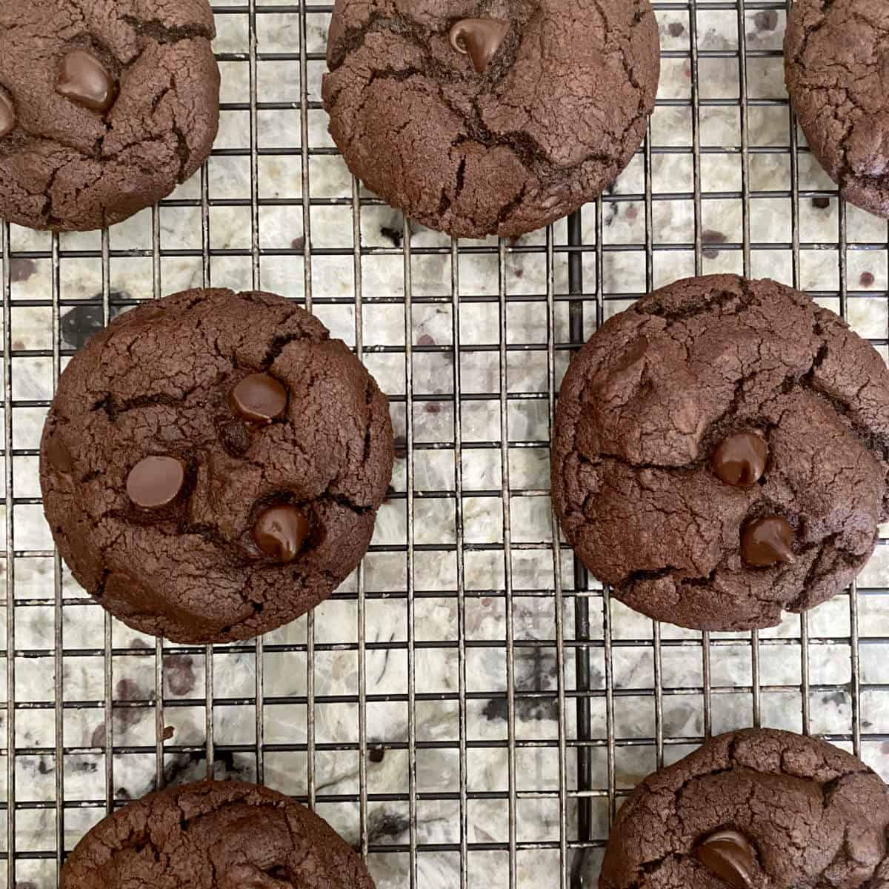

Main
Frosty Strawberry Squares

Description
Delicious chocolate cookies that taste like brownies.
Ingredients
- 2 cups white sugar
- 1 ¼ cups margarine, softened
- 2 eggs
- 2 teaspoons vanilla extract
- 2 cups all-purpose flour
- ¾ cup unsweetened cocoa powder
- 1 teaspoon baking soda
- ⅛ teaspoon salt
- 1 cup chopped walnuts
Step 1
-
Preheat the oven to 350 degrees F (175 degrees C).
Step 2
-
Cream sugar and margarine in a large bowl until light and fluffy. Beat in eggs, one at a time, then stir in vanilla.
Step 3
-
Combine flour, cocoa, baking soda, and salt in a separate bowl. Add to the creamed mixture and mix until just blended. Stir in walnuts. Drop by spoonfuls onto ungreased cookie sheets.
Step 4
-
Bake in the preheated oven until edges are set and centers are soft, 8 to 10 minutes. Let sit briefly before transferring to wire racks to cool completely.